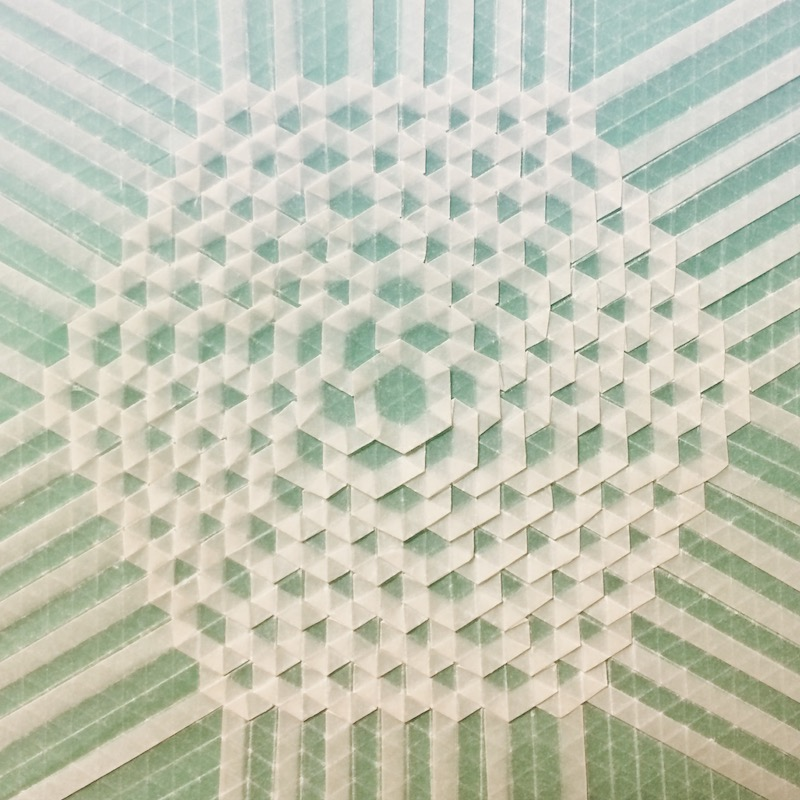
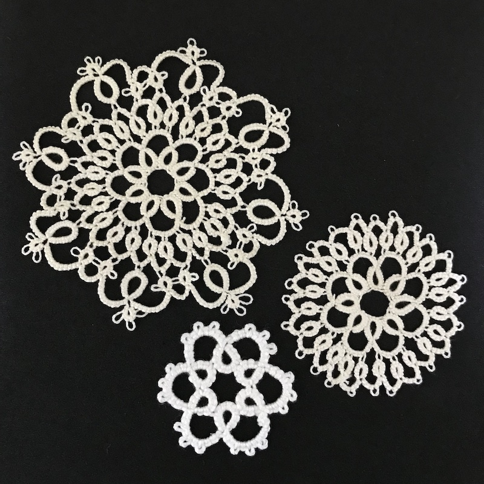
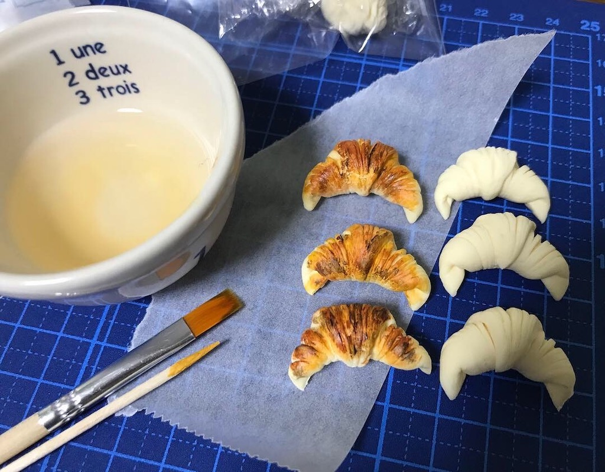
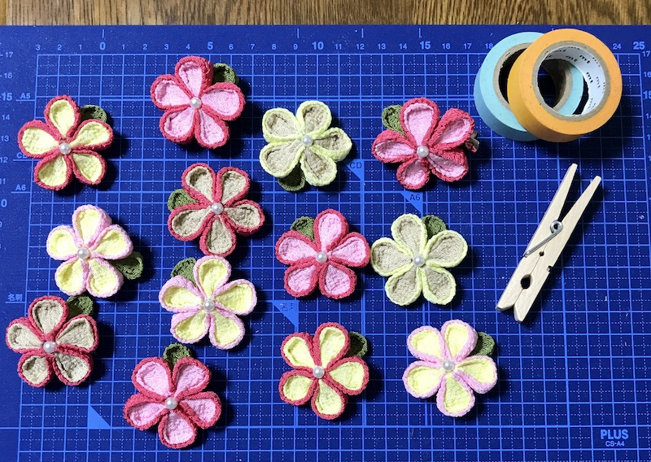
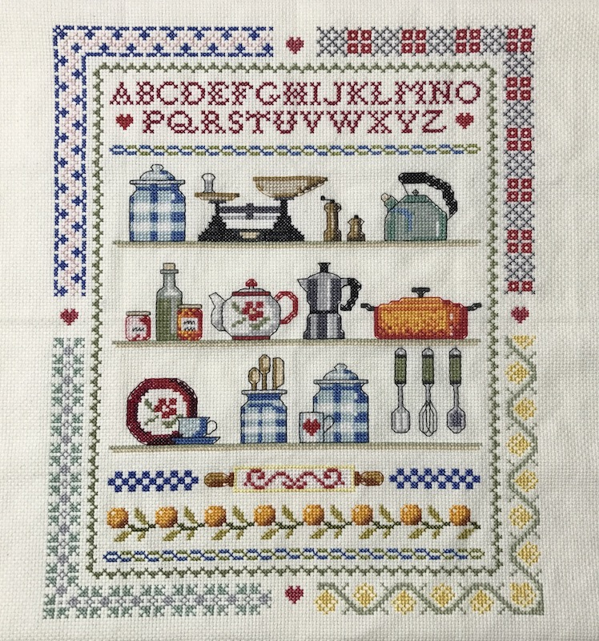
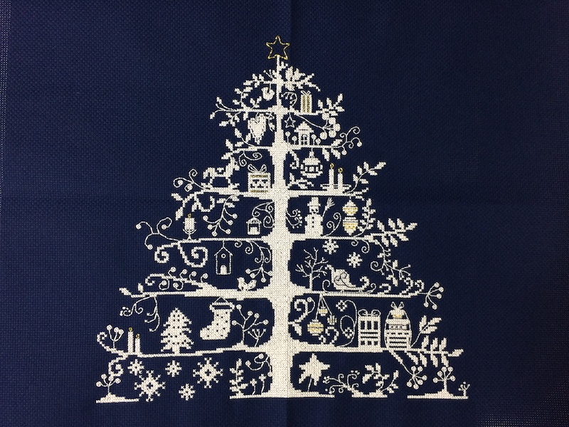
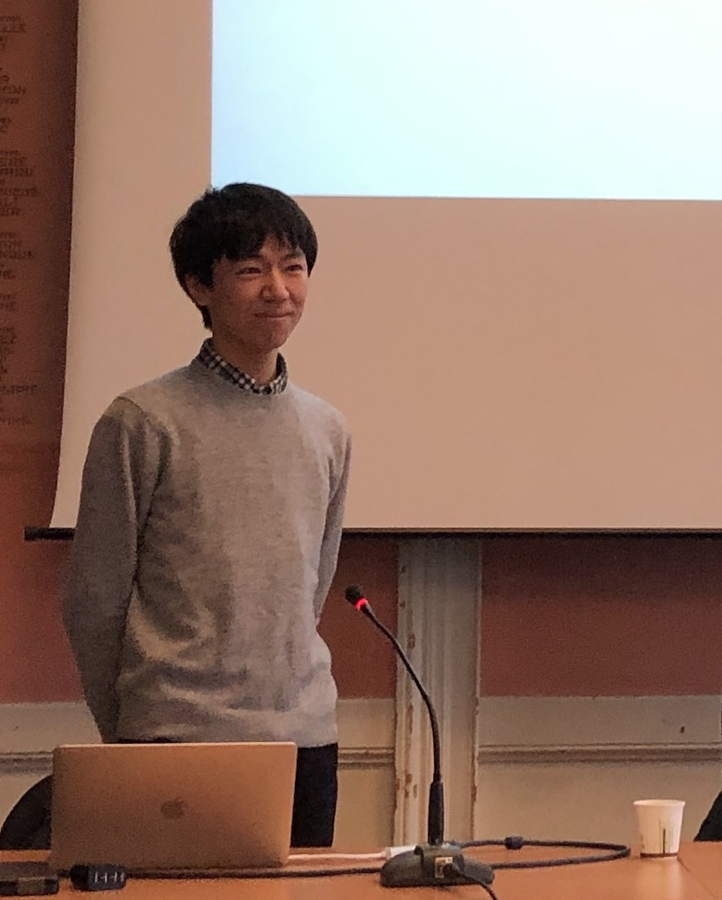
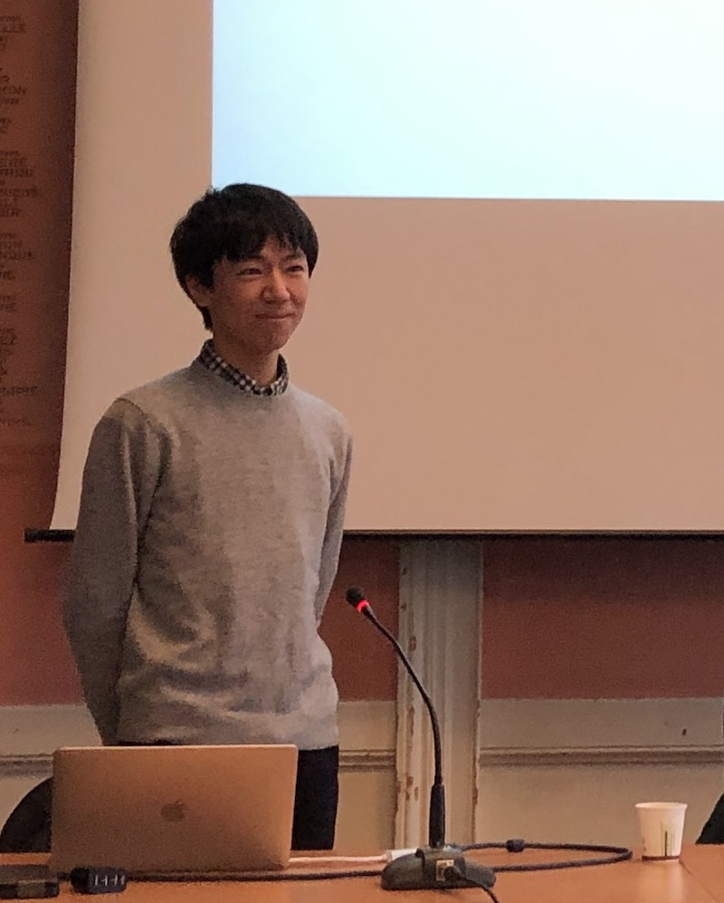

写真やりとりのための仮ページです。
ジャンルごとに写真をピックアップしました。記事全体の統一感などもあると思いますが、いくつか選んでいただければと思います。
ハンドメイド作品(1)
 （左）：1枚のトレーシングペーパーで幾何学模様を重ね込んだ、折り紙テッセレーション（Tesselation）。
繊細な模様がずっと共通して好きで、（右）：シャトルという小さな道具で結び目を1目ずつ繋いでゆく、タティングレース（Tatting lace）は特にたくさん作ってきました。
糸の結びの構造を端緒に、学生時代には修論と別テーマで論文も書きました。

ちなみに上の写真は、その発表をしたときの、ジオメトリがテーマの学会です。他の研究者の作品も含めて、机に並んでいます。
ハンドメイド作品(2)
 小さくて可愛いもの、綺麗なものには全般目が無いので、ミニチュアを作ったり（左：樹脂粘土のミニチュア）、 日本を含めさまざまな国の伝統的なハンドメイドの技法・ジャンルにチャレンジしたい！といつも思っています。（右：つまみ細工（ちりめん））
ハンドメイド作品(3)
 クロスステッチと呼ばれる刺繍は、さまざまなハンドメイドに興味を持つきっかけになりました。 カラフルで楽しいサンプラーから、繊細で洗練されたデザインまで、魅力はたくさんです。
注：これらも私が作ったものですが、元となるデザインは市販のものなので、もし掲載するならば、著作権を併記してもらうと良いと思います。 （左）Hachette Collections Japan, （右）Dollfus Mieg & Cie, S.A.
顔写真について
そのまま使っていただけれるものがあれば、わざわざオフィスで撮影をしていただく手間はないかなと思っています。 ダウンロードして、トリミングは自由にしてもらったりして、大丈夫です！（レイアウト的に、横長にしたほうが良いときなど）
 
